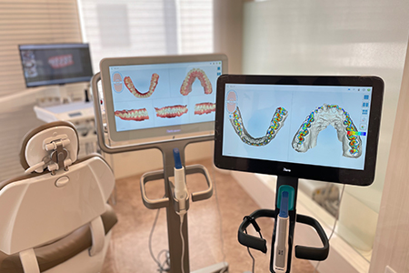

- 新宿の歯医者・矯正歯科「新宿ルーブル歯科・矯正歯科」TOP
- 当院の特長・選ばれる理由
新宿駅東口直結・徒歩1分
土日診療だから通院しやすい
「新宿ルーブル歯科・矯正歯科」は、新宿駅東口直結・徒歩1分の場所にある通いやすい歯医者です。平日19時半まで、土日も18時まで診療し、休診日は月曜・木曜です。平日の学校や仕事帰り、お休みの土曜・日曜など患者さまのご都合の良いタイミングで通っていただけます。
新宿駅直結なので雨に濡れることもなく、お買い物や用事ついでにお立ち寄りいただけます。保険診療はもちろん、矯正治療・セラミック治療などの自費診療にも対応しています。
プライバシーが守られた
リラックスできる空間で治療を
患者さまがリラックスかつ安心して治療を受けていただく環境づくりを心がけています。院内全体は、リラックスしていただけるように照明を落とした空間を演出。まるでホテルのような内装に仕上げています。
待合室はカフェをイメージし、白とグレーをベースにした清潔感のある雰囲気です。カウンセリングルームは、患者さまのプライバシーがしっかりと確保されています。他の患者さまの目を気にする心配はありません。また、大画面のモニターを使用し、治療計画について丁寧で分かりやすくご説明できるようになっています。他にも、「特診室」と呼ばれるＶＩＰルームをご用意。通常の診察室よりも内装を豪華に仕上げており、個室よりもさらにゆったり治療を受けていただくことができます。
また、診療ユニットも「人間工学」に基づき設計されたユニットを使用しています。シートがふかふかで身体にフィットした座り心地のため、長時間の診療でも疲れることはありません。
このように、患者さまがリラックスかつ安心して治療を受けていただける環境で、一人ひとりに合った治療を行います。
患者さまのお悩みしっかりとお聞きし
丁寧にご説明する
お悩みを気軽に相談できる「歯のコンシェルジュ」を目指す当院では、担当歯科医師が患者さまの疑問やお悩みを丁寧にお聞きすることを大切にしています。ご満足いただく治療を行うためには、しっかりとしたヒアリングが基本になります。当院では、2種類のカウンセリングルームをご用意し、患者さまのヒアリングを行っています。
初診の際には、十分なカウンセリングの時間を設け、患者さまのお悩みやご要望をしっかりとお聞きしています。治療に関しても、患者さまがお悩みの部分を治す治療法や根本治療など、いくつかの治療計画をご提案するので、患者さまのご希望に合わせてお選びいただけます。もちろん、治療内容や治療におけるメリット・デメリットも丁寧にご説明します。また、主訴を改善することはもちろんですが、当院ではお口の中の健康をお守りするための「プラスアルファ」のご提案を大切にしています。
お口全体の健康を考え、
高い技術力でご要望に応える
当院では、患者さまの10年後・20年後の歯の健康を守ることを大切にしています。痛みのある部分だけ・1歯単位で治療をするのではなく、お口全体の状態や噛み合わせを考慮し、お口全体を一つの単位と考えた「一口腔単位の治療」を行います。咬合器（顎の運動や咬み合わせを再現する装置）の使用や矯正治療を通じて、お口全体を考え長く健康な歯を保つための治療をご提供します。また、そのための研鑽に日々励んでいます。
そして、患者さまのご要望に的確にお応えするために、技術や新しい知識の習得を怠りません。学会やスタディグループ、セミナーへの積極的な参加もその一環です。歯科医師や歯科衛生士などが連携して患者さまの歯の健康をお守りします。
精度の高い治療を可能にする
先端設備を導入

精度の高い治療をご提供するため、口腔内を正確に撮影して型採りする3Dスキャナー「itero」や、歯科用CT、マイクロスコープなどの先端設備を導入しています
歯科医療は常に進歩し、新たな精密治療を叶える機器が登場していますが、当院では患者さまがご満足いただける治療がご提供できるよう、積極的に機器を導入しています。
徹底した衛生管理と清潔な院内
安心・安全に診療を受けていただけるように、当院では衛生管理についても徹底しております。世界で最も厳しいヨーロッパの規格を満たした「クラスB滅菌器」にて、患者さまごとの滅菌を行い、院内空間を清潔に保つため、口腔外バキュームも導入しています。院内の清潔感にも気を使い、患者さまが落ち着いて診療を受けていただけるよう配慮しています。
矯正・審美・セラミック治療の
実績と経験が豊富な歯科医師が在籍
当院は、矯正治療や審美歯科・セラミック治療も得意としています。矯正治療を専門にする歯科医師が在籍しているので、歯並びの改善はもちろんのこと、噛み合わせの改善を行うことができるので、審美面と機能面を両立した矯正治療をご提供できます。
年間400件以上（2021.1.1～2021.12.31実績）の矯正治療の実績があり、中でもマウスピース矯正はインビザラインの「ダイヤモンド・プロバイダー（インビザライン矯正の開発元のアライン・テクノロジー社が認定したプロバイダー制度の称号）」に選ばれています。
また、矯正治療を専門にする歯科医師が在籍しているため、お口のバランスや歯の大きさ・形など患者さまの理想の口元が叶えられるセラミック治療がご提供可能です。お顔全体と歯のバランスや、スマイルバランスをトータルで考慮して最適な審美・セラミック治療をご提供しています。豊富な経験と高い技術力を持ったセラミック専門の歯科技工士が細部にまでこだわり、審美面と機能面に優れたセラミックの歯を製作します。